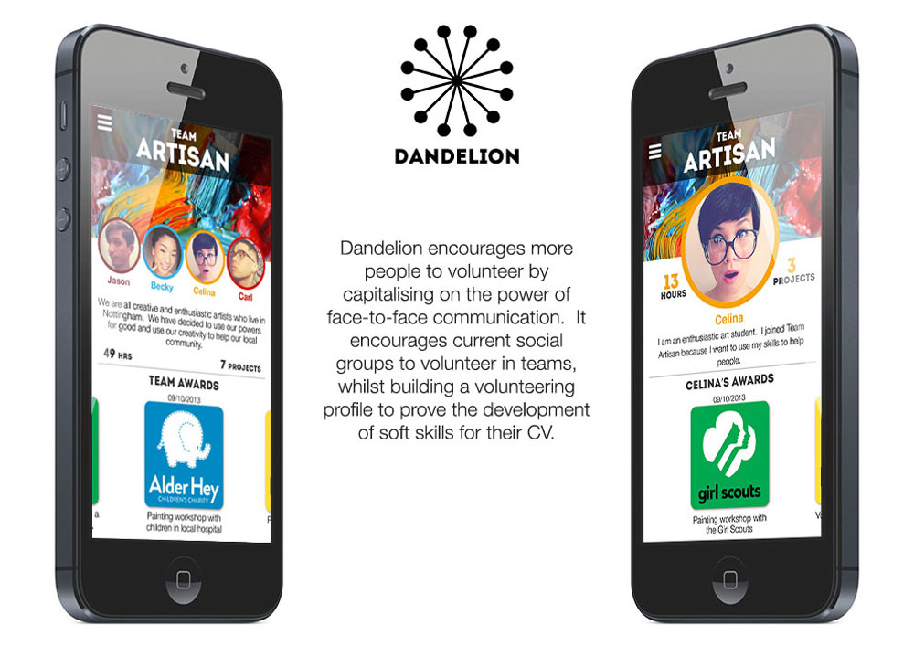
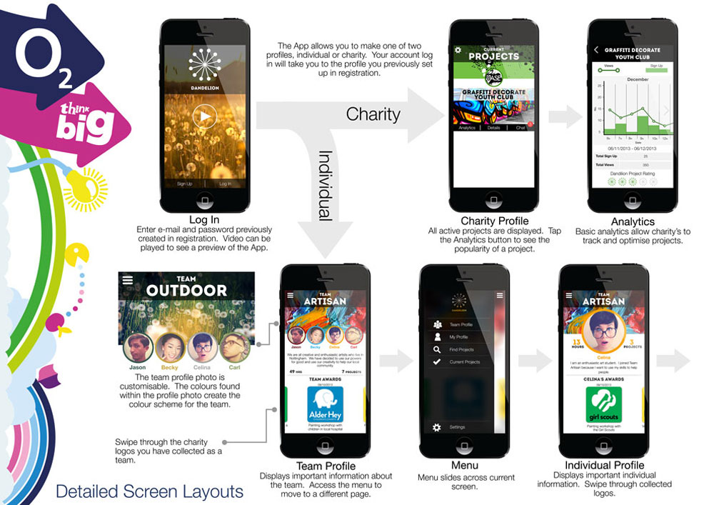
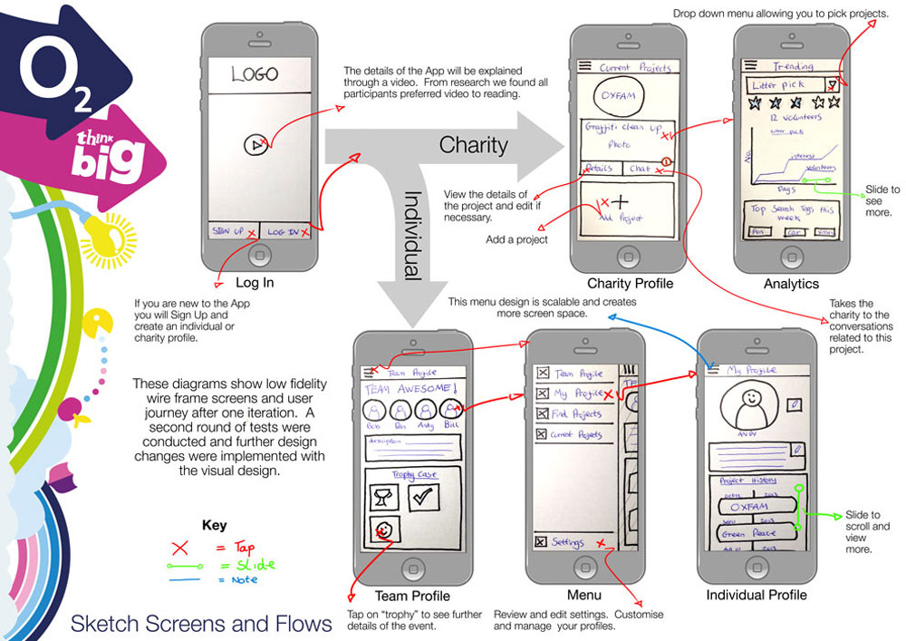
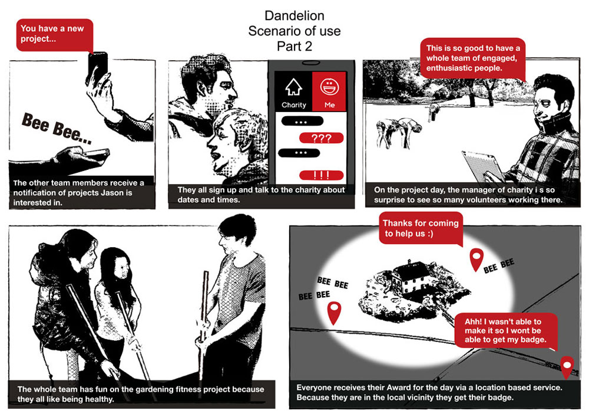
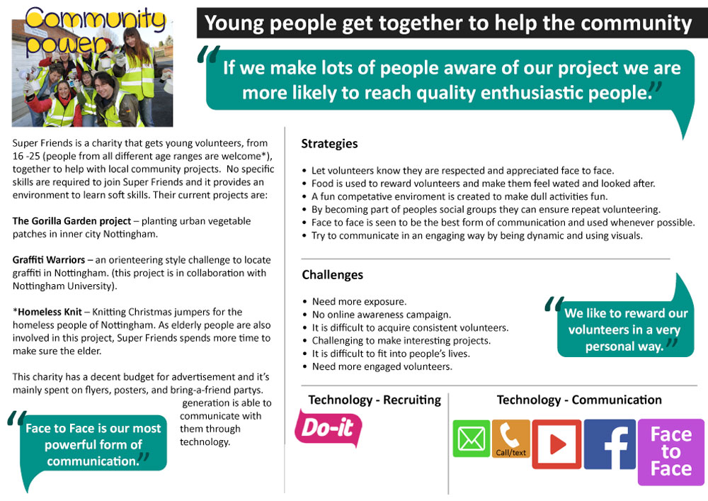
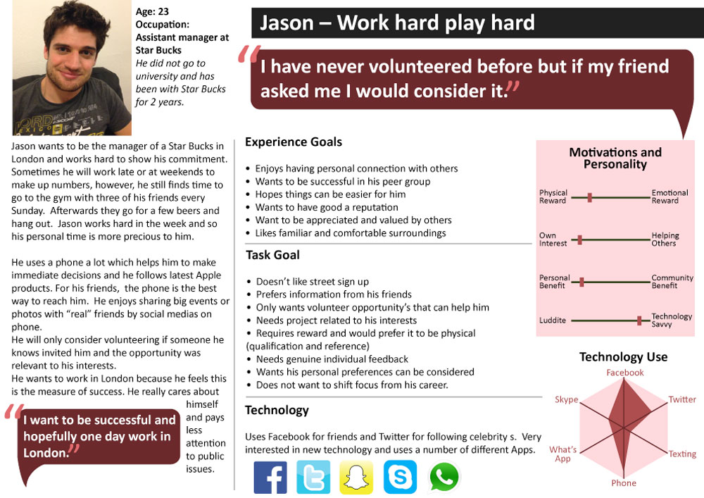
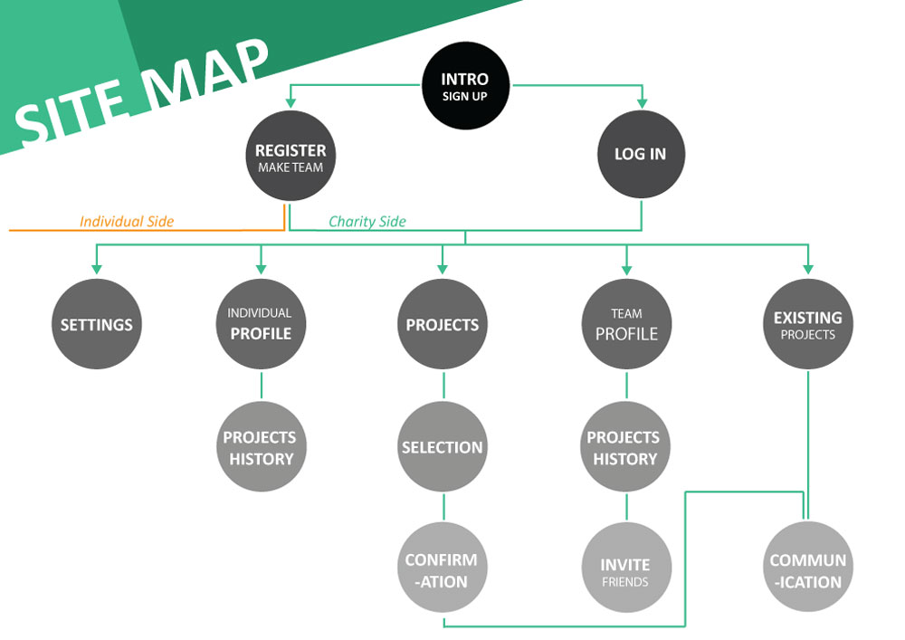

This was a team project set by O2 Telephonica to tackle a particularly challenging problem, “How do we get more people to volunteer?” They set us the challenge of completely changing people’s behavior using technology.
Using Human Centered design techniques we conducted thorough generative user research to fully understand the users motivations, abilities, triggers, task goals and experience goals. This enabled us to identify needs that could be converted in to actionable design insight. The design was refined through an iterative design process, testing frequently with users to “fail fast”.













